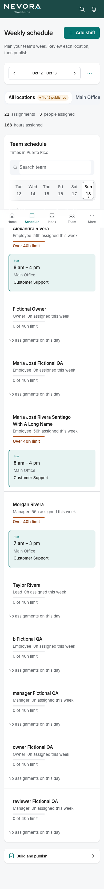
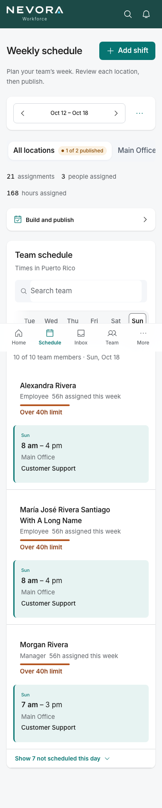
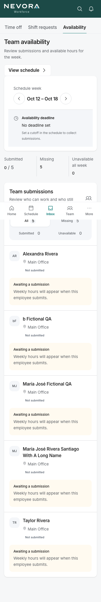
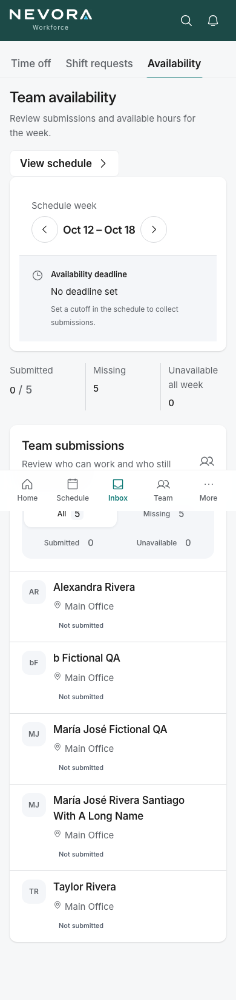
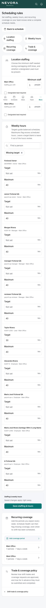

Owner portal, batch 3
Fictional QA data, local preview. Before is be491e1 (batch 2); after is branch claude/owner-batch-3. During the checks, one fictional hour target was saved (Taylor Rivera, 30 h) to prove a filtered save keeps every other field, so the after Home shows 9 people without a target instead of 10.
U1 · Home: Today and Tasks reach the first phone screen
Tasks now come before This week (in reading and keyboard order, not just visually), and the setup card lists only its open step. Tasks start at 622 px instead of below This week.
Before · 390 first two screens
After · 390 first two screens U2 · Schedule and Availability on phones
Build and publish sits under the week and location controls (500 px, was the bottom of a 3,297 px page). People with no shift that day fold into "Show 7 not scheduled this day"; a link to one of them opens it and focuses their row. Availability shows a missing submission as one line instead of a repeated card.
Schedule before · 3,297 px
Schedule after · 1,940 px
Availability before · 2,314 px
Availability after · 1,652 px
U3 · Scheduling rules: find a person, group coverage by location
Weekly hours gets "Find a person" and "Missing target"; filtered rows are hidden, not removed, and a save with a filter on changed only the edited field. Fourteen coverage cards become two location groups with counts; a link to a period opens its group. Phone page 7,826 → 5,013 px.
Before · 7,826 px
After · 5,013 px
After · filtered to one person
After · link to one period C2 · Past coverage gaps are history, not urgent work
Gaps on days before today move to "Earlier this week" in the Inbox (no red styling, one line of explanation) and to their own "Earlier this week" groups at the end of Home Tasks. "Needs attention now" drops from 21 to 3. Nothing is deleted and the counts are unchanged.